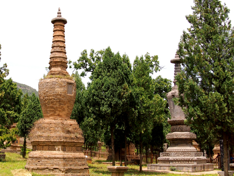

從景點到民居 充滿建築瑰寶
介紹過世界各地許多建築，到中國大陸親自觀摩倒是第一次，雖然出發前在網路上已經事先收集過相關資料，但親臨現場看到龍門石窟、王屋山、少林寺等，還是讓我非常震撼，這些精細技術、雕刻工藝，至今看起來仍是很了不起的作品，就算在鄉村小路間的古民居，一塊塊石板堆疊起來的屋頂、時而見到古石柱、古石凳、石盆…等等，我覺都是非常棒的寶物。
王屋山-陽台宮
位於王屋山的陽臺宮，建於唐朝年間，內部主要有三清殿、玉皇閣，以及珍貴的千年古樹梭羅樹和檜柏，其建築採用罕見的四方形柱子，上面佈滿精緻的浮雕工藝，以及歇山式三重簷閣樓式的結構，皆是歷史中的建築經典。
少林塔林
塔林是少林寺歷代德高望重的僧侶的墳墓，從唐朝到現代、大小磚石墓塔加起來竟有240多座，從各個塔的四角、六角、柱錐體…等造型到精緻的雕刻，可以窺見該時代的特色，充滿古磚石建築與雕刻的藝術價值。

麗景門
建于隋代的麗景，門內本為歷代朝廷辦公的地方，現今看到的是仿照金、元兩朝遺址重建的，城門樓、甕城、城牆等充滿盎然古意，走進裏頭的老城區的青石路、紅磚房，保留明清建築樣貌，居民悠閒生活其中，成為當地特色。